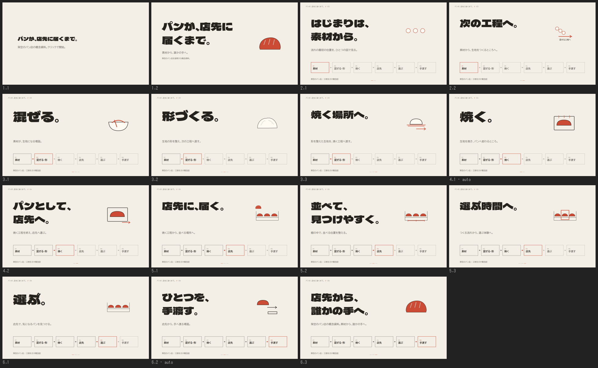

スキル一覧へBeatdeckで、1クリックごとに話を進める
発表内容をsceneとbeatに分け、話す順番に1段階ずつ表示します。元の段階へ戻る操作や、URLからの直接表示でも、同じ画面を再現することがこのスキルの契約です。
原典verifyに合格。15段階の前進・後退・URL直接表示を比較し、既定の差分許容値0.1%で全フレームが一致しました。文字衝突・範囲外・console warning/error・remote requestは0件です。
連続する3段階を見る
クリックごとに見出しを変え、共通の工程図は同じ位置に保ちます。聴衆へ一度に全情報を見せず、話す順番に分ける作り方です。
3.1から実際に再生 ・ 原典verifyの実測report ・ 実行条件とhash ・ 確認範囲
全15段階

入力は架空のパン店を説明する原稿。QRのURLは未指定のためQRなし。source照合対象のTerminal/data-exact要素は0個です。全キーの手動稽古、実機のWi-Fi切断、別端末での通し確認は未実施です。画像の確認とユーザーの美術承認を区別します。